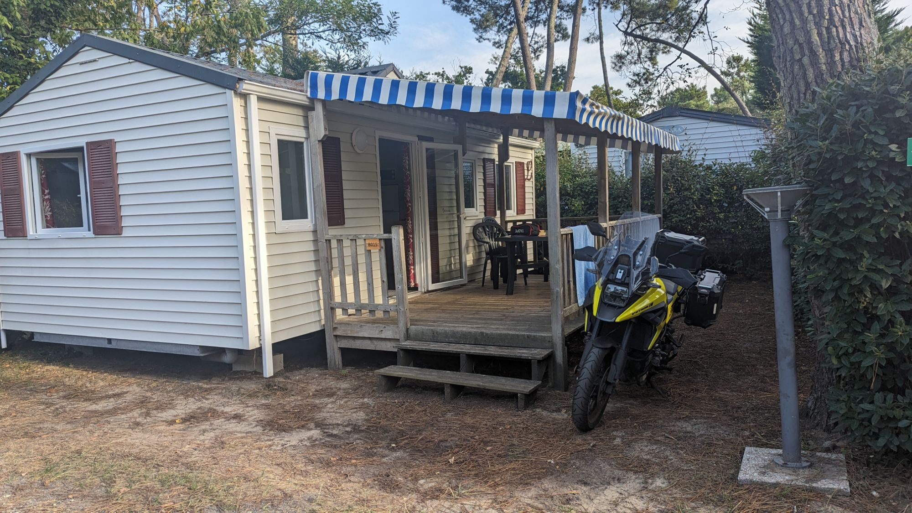

The Story So Far
These days, I almost always go to the west coast of France, and more specifically Les Mathes. It’s a place I know well, a place I return to, and a place that now feels like home for a few weeks every year. But my relationship with France and camping has changed a lot over the years.
I started with the basics: a tent, a sleeping bag, a bike, and very little idea of where I was going. My cousin Terry and I headed to France with Suzuki bikes and a sense that we were basically winging it. We packed far too much, we didn't really know what we were doing, and we were absolutely delighted with ourselves for making it there at all.
That was the beginning of a pattern that lasted for years. The early trips were all about freedom, uncertainty, and the excitement of finding a place to stay when you arrived. We would ride all day, arrive late afternoon, and then hope the campsite had room for us. We loved it. We were young, a bit scruffy, and completely happy with the whole arrangement.
In the years that followed, there were more trips with friends and later with Sharon. The camping trips became a regular part of my life. We would head down to the west coast, usually without much planning, and enjoy the beaches, the bars, the local towns and the easy pace of life. The campsites were often basic but they were always clean, always well run, and always very French in the best possible way.
As the years went on, the details changed. The bikes changed, the travel partners changed, and the gear got more comfortable. But the magic of France stayed the same.
The key turning point
By 2017, I had reached a point where the tent was no longer the enjoyable part of the holiday. It had become a chore. A tiny pitch, a cramped setup, a difficult walk to the toilet block, and a growing awareness that I was getting older and not quite as keen on crawling around on the ground in a two-man tent.
That was the moment I decided to make a change. I’d had enough of tents and started to look for something more comfortable, more relaxed, and more worth the effort. The answer was the static caravan.
What I do now

These days I book a static caravan, usually in a 4 or 5-star holiday park, and I go twice a year during the cheaper periods in June and September. It’s less about roughing it and more about enjoying the surroundings, the pool, the beach, the food, the bar, and the general comfort of having somewhere proper to sit and relax.
It still gives me the same sense of escape, but without the discomfort that came with the earlier years. The location matters too. I still prefer the west coast of France, and Les Mathes has become a familiar base. I know my way around the area, I know what to expect, and I know exactly why I keep going back.
Why I keep returning
One thing that has impressed me over all these years is how well the French do campsites. They’re always spotless. The facilities are generally excellent. They’re often set in beautiful locations and they feel cared for in a way that makes a holiday easier and more pleasant.
More than anything, the place itself matters. The coast, the weather, the countryside, the quiet roads, and the feeling of being away from everyday life all help explain why I keep coming back. I don’t think there was ever a conscious decision to “become a camping person.” It just happened. And once it did, it stayed with me.
Recent trips in more detail
Because this page is now intended as an overview, I’ve kept the longer, more detailed trip stories elsewhere. If you’d like to read the full accounts, here are the relevant pages:
- France 2023 — reflections on a holiday in France and the changes in my camping habits over the years.
- A Tale of Two Holidays — nine days at Les Mathes and seven nights in the Loire Valley.
- French Camping — a broader look at my camping experiences in France.
- Holiday Number 2 – September 2026 — a recent caravan holiday at Biscarrosse.
In other words, this page is the big picture. The others are the detailed chapters.